極細ベゼルで有名な初代AQUOS CRYSTAL、305SH
どうやらこいつ、海外で発売されたおかげで有志の力が集まりAQUOSのくせにROM焼きができるようになったんですね
しかもMIUI
てことで備忘録(?)として方法と使い道をまとめていきます
あ、ちなみに初Noteです
必要な物
305SH本体
MicroSDカード(8GB以上)
MicroUSBケーブル
必要なファイル
quickreboot_2.1.5.apk(必要に応じて)
注意点
これを見て真似して破壊しても私知りませんからね！
自己責任でお願いします
一応ファイルを置いときましたが消えてたらごめんなさい
また、SDカードは新品が望ましいです。使い古しだと認識しないことがあり、私もめっちゃ悩みました…
実際の手順
※もうMIUI化してしまったのでMIUI化前の写真はありません
必要なアプリのインストールとリカバリー
初めに必要なファイルをすべてダウンロードし、SDカードに移しておいてください
そしたらSDカードを305SH本体に刺し、コンテンツマネージャーからTewilove 305SH_2.apkをインストールしてください
PCからadb経由でのインストールでも構いません
ホームに"ROOT(305SH)"というアプリが出現するので、そのアプリを開き右下の[ROOT]を押しましょう。
そうすればTWRPがインストールされ、再起動します。
再起動が終わったら、コンテンツマネージャーからquickreboot_2.1.5.apkをインストールしてください。
インストールが完了したらアプリを開き、Reboot Recoveryを押します。
Root権限が求められるので許可しましょう。
PCが使えるなら、quickreboot_2.1.5.apkは必要ありません。
adb reboot recoveryでいいでしょう。
ここからが本番(TWRP)
ここからTWRPの操作に入ります。
ここでの操作が一番危険です。ミスったら文鎮です。私は2敗です。
まずはバックアップ
一旦取っておきましょう
TWRPが起動したら、左列上から2番目の[Backup]を選択します。
画像の通りにチェックを入れ、Swipe to Back Up
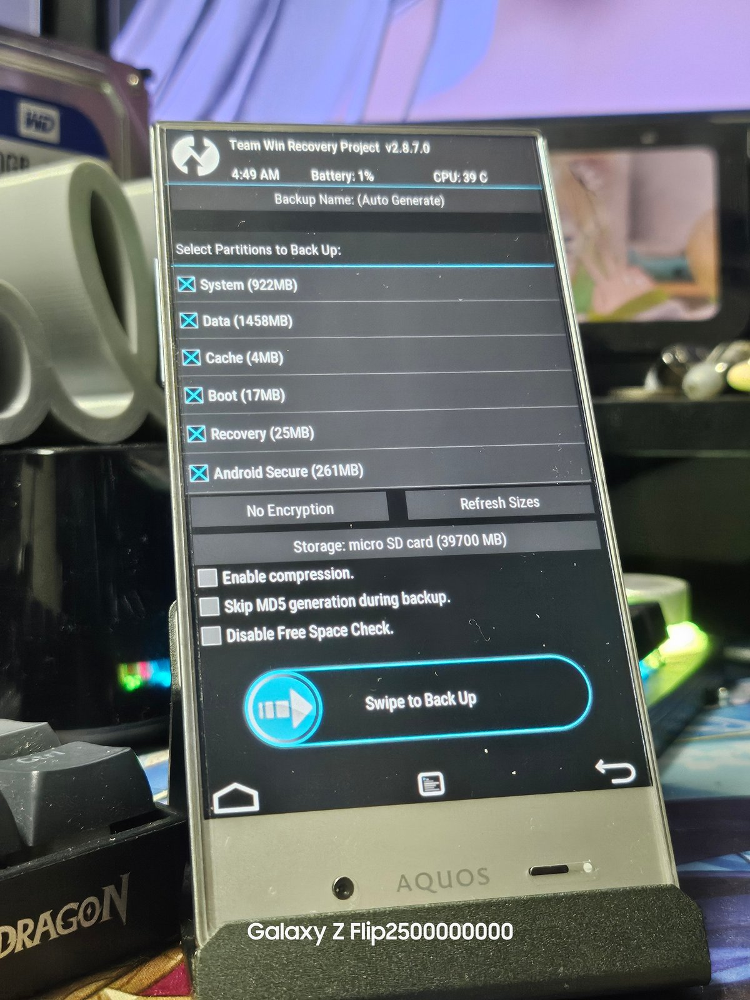
ロードが始まりますが、絶対にスリープに入らないようにしてください。
終わったら再起動が入ります。
データのWipe
いわゆる初期化です。これをするとすべてのデータが飛びます。
もう一度リカバリー(TWRP)に入り、一番右上の[Wipe]を選択します。
Advanced Wipeを押し、画像の通りにチェックを入れます。
準備できたらSwipe to Wipe
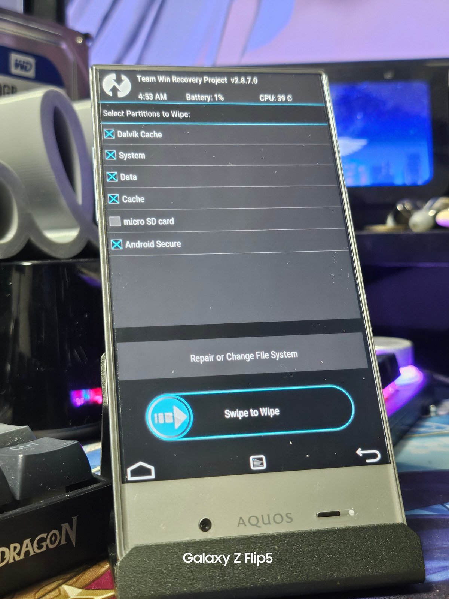
ここでもロードが始まりますが、絶対にスリープに入らないようにしてください。
じゃないと文鎮化します。(1敗)
終わったらTWRPのホームに戻ります。
MIUIのインストール
ここまでくればもうウイニングラン…と言いたいですが、まだROMのインストールという項目が残っています。
TWRPの右上、[Install]を押します。
いろいろ出てきますが、下のほうに行くと先ほど入れてもらったzipファイル3種があります。
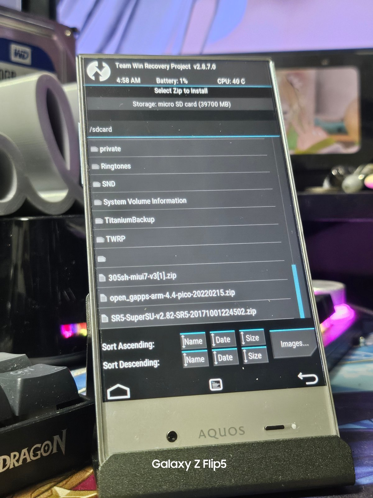
最初に入れるのはMIUI本体です。
305sh_miui7-v3.zipを選択し、Swipe to Confirm Flash
毎度の如く絶対にスリープに入らないようにしてください。
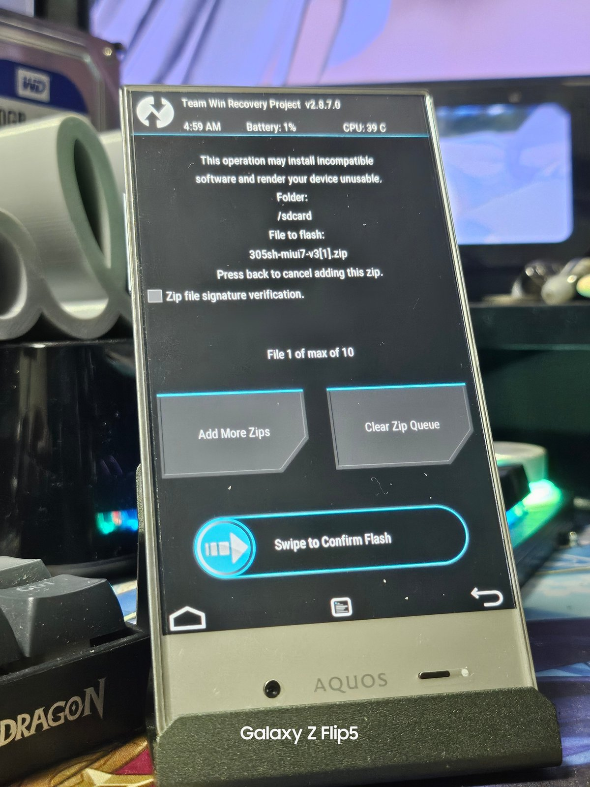
終わったら再起動しましょう。
少しブートが長く不安になりますが、正常なので信じて待ってやりましょう。
そうすれば…
MIUI7 起動
ここまでくればもう安心です。いつも通りセットアップしましょう。
Miアカウントにはログインできなくなっているので注意してください。
GMSの導入とRoot(SuperSU)
セットアップが終わったら
電源長押し→Reboot Option→Tap to Recovery
と選択します。
MIUIインストールと同じ流れで、open_gapps-arm-4.4-pico.zip(GMS)、SR5-SuperSU-v2.82-SR5.zip(Root)をインストールしてください。
終わったら再起動しましょう。
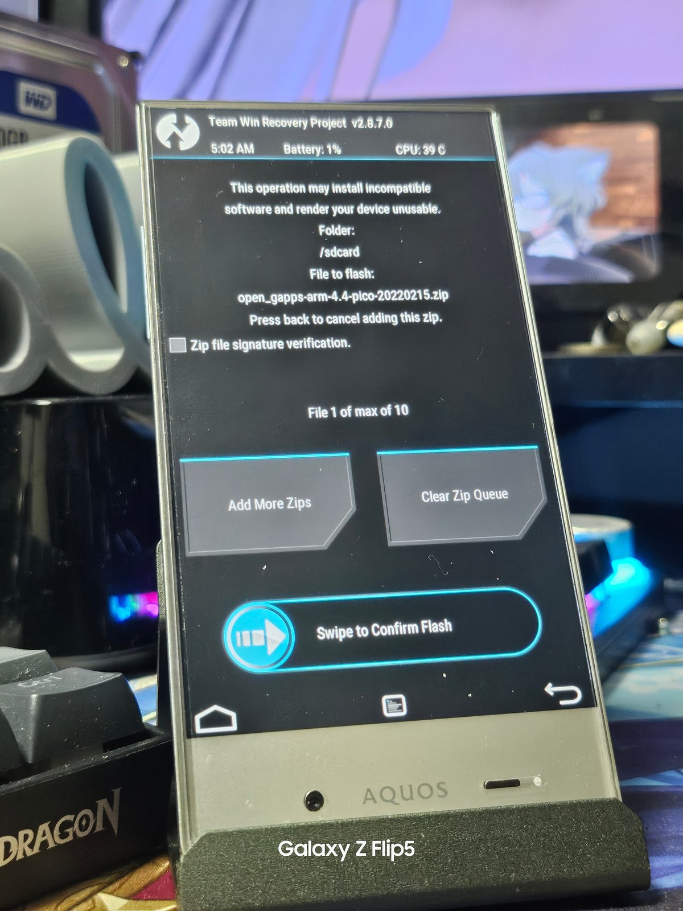
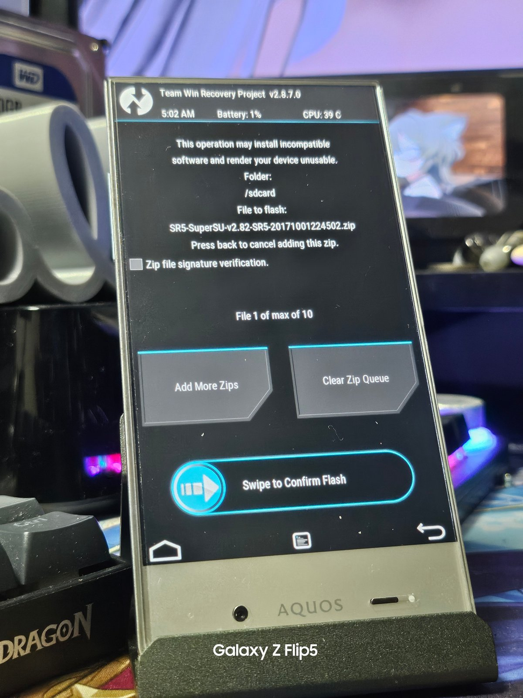
305SH MIUI化・GMS導入・Root化完了
これでMIUI化およびGMS、Rootの導入は成功です。お疲れさまでした。
GAPPSが導入できたので、普通にログインしてストアからアプリを落とすことができます。
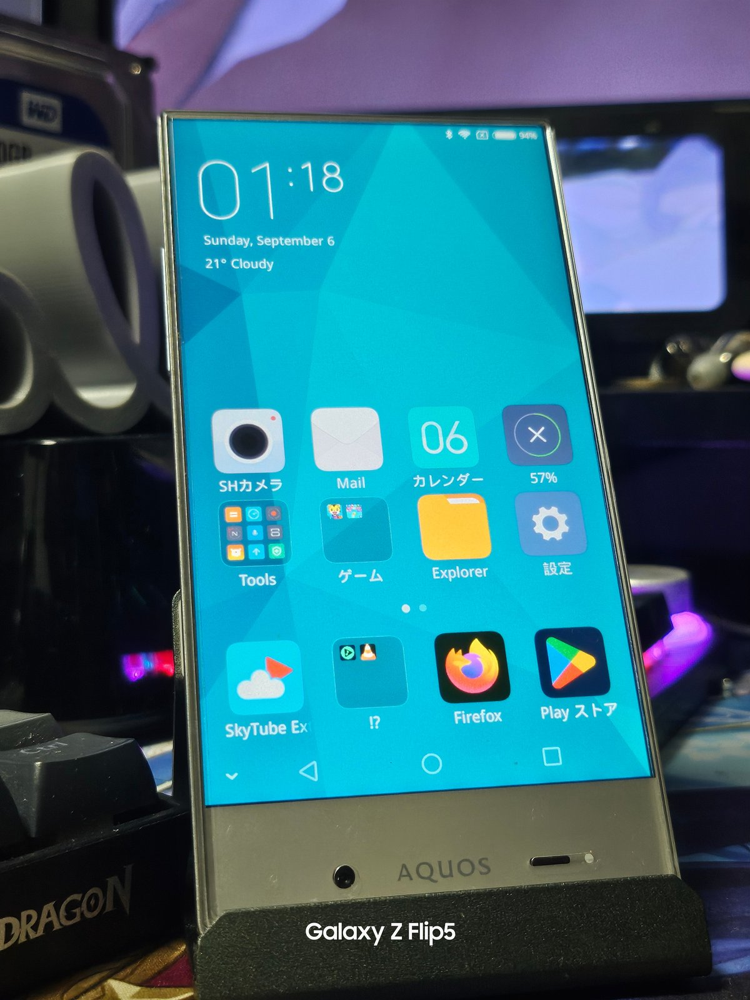
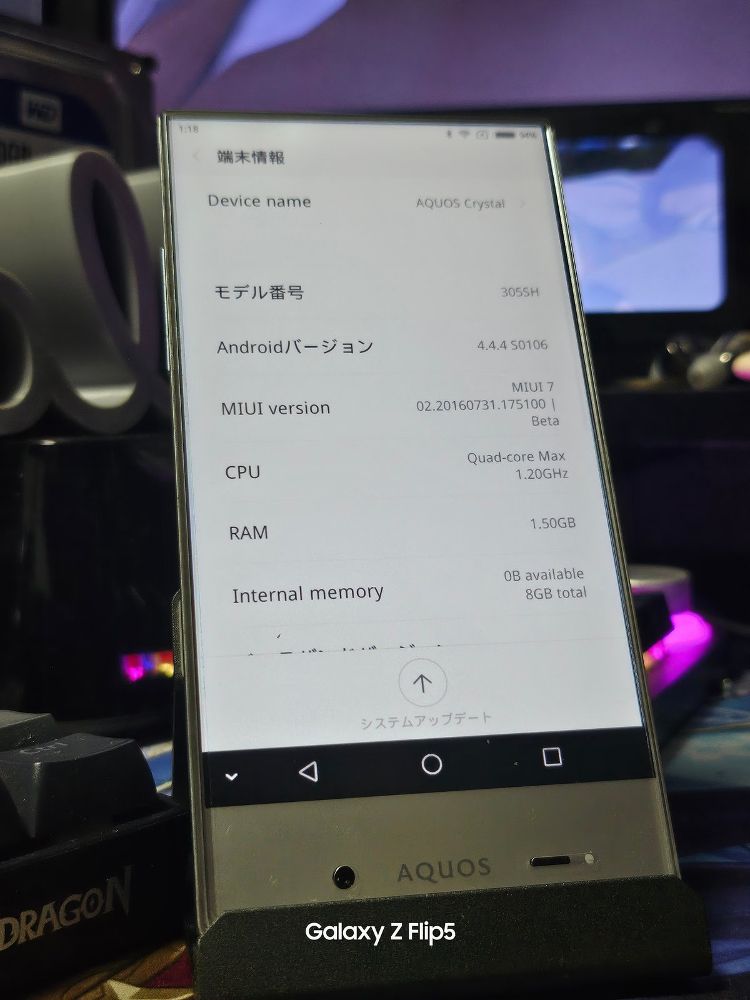
使い道について
ここまでガチャガチャいじってきましたが、結局お前何に使うん？って話ですよね。
古いとはいえAQUOSにMIUIが入れられるってだけで十分ロマンですが、実際に私がどのように使っているかを紹介します。
YouTubeクライアント
SkyTubeというサードパーティー製のYouTubeクライアントを使えば、この端末でもYouTubeを見ることができます。
ですが、見るだけです。高評価やコメントは残せません。
しかしバックグラウンド再生ができるので、疑似的に音楽ストリーミングができます。
https://github.com/SkyTubeTeam/SkyTube
SkyTubeTeam / SkyTubegithub.com ↗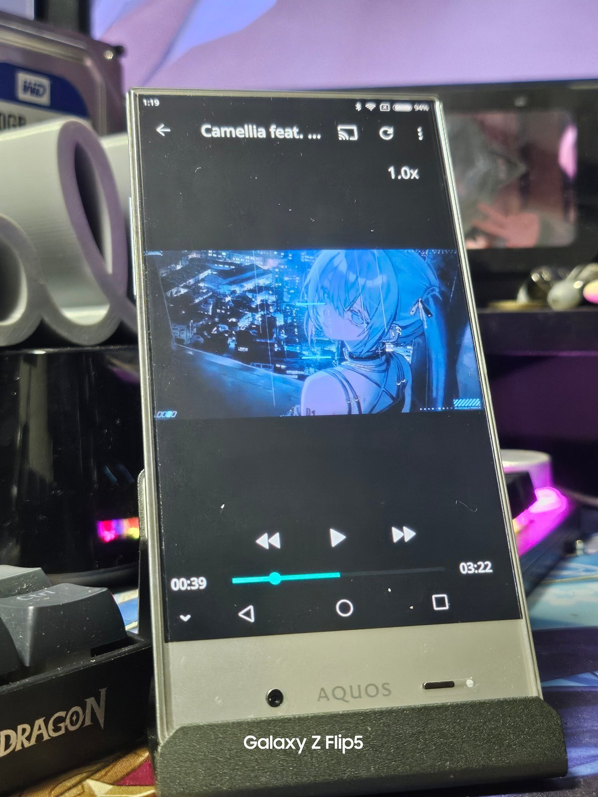
YouTubeクライアントといえばNewPipeが有名ですが、MIUI7(Android4.4)じゃ無理でした。
音楽プレイヤー(Musicolet)
こいつはスナドラ400とかいう産廃SoCを積んでるくせに何故かharman/kardonのエンジンを搭載してやがるので無駄に音質はいいです。
その音質の良さを活用し音楽プレイヤーとして使うのもおすすめです。
私はMusicoletというアプリを使っています。UIもきれいでおすすめです。
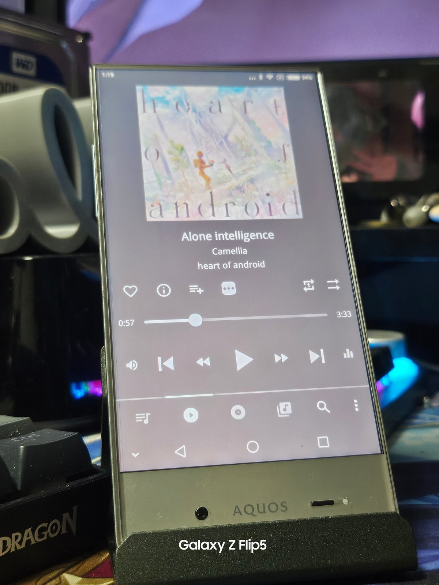
画像・漫画(Perfect Viewer)
Perfect Viewerというアプリを使えば、自炊した漫画や写真などを見ることができます。
Playストアから落とせる最新版だと不安定なので、APKMirrorなどから古いバージョンを落としてくることをお勧めします。
ブラウザ
このAndroidバージョンだとWebViewの更新という概念がないので独自エンジンを使っているブラウザでないと使えない可能性が高いです。
色々試した結果、FireFoxのバージョン68.11.0がギリッギリ使えます。
ちょっとした調べものなら普通にできます。TwitterとかYouTubeとか、モダンなサイトは厳しいですけど、阿部寛のホームページを約1秒で開くことができます。
そして紳士の皆さん朗報です。
なんと、Pixiv Fanboxが使えます。
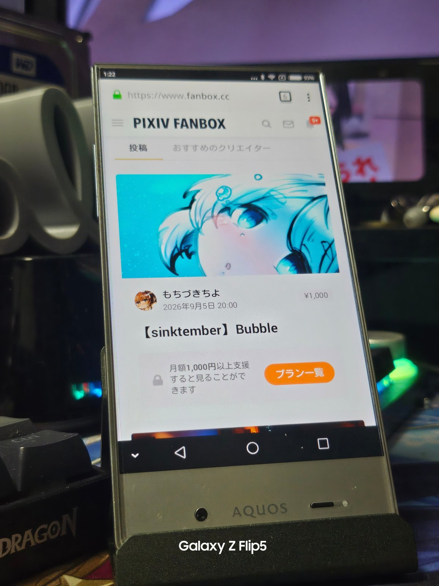
正直驚きました。意外と見れるもんなんですね…
ゲーム
やっぱりゲーム、したいですよね。こんな古いのでゲームしたい人いる？
しかし遊べるゲームにも限りがあります。なぜなら古いので。
ですが、昔からあるゲームや古いバージョンのapkを持ってこれれば遊べる可能性があります。
あとGBAのエミュレータを使ってレトロゲーも遊べるらしいですよ。
まあ、私はゲームしない側の人なんですけどね。
一応私が入れてるゲームは下に置いときます。
ダンシングライン(旧バージョン)
Bubble Mania
キャンディークラッシュ(旧バージョン)
写真
なんと、Googleフォトが動きます。
ほかの端末で撮った写真をバックアップし、305SHでスライドショー再生するなんてこともできます。
まとめ
今回は305SHをMIUI化、そしてRoot化までしてみました。
こんな感じでやってこうと思うので今後もよろしくお願いします。
最後に今回犠牲になってくれた2台の305SHくんを貼っておきます。
どっちもブート画面でフリーズ、電池切れまでつきっぱです。欲しい方いたら連絡ください。
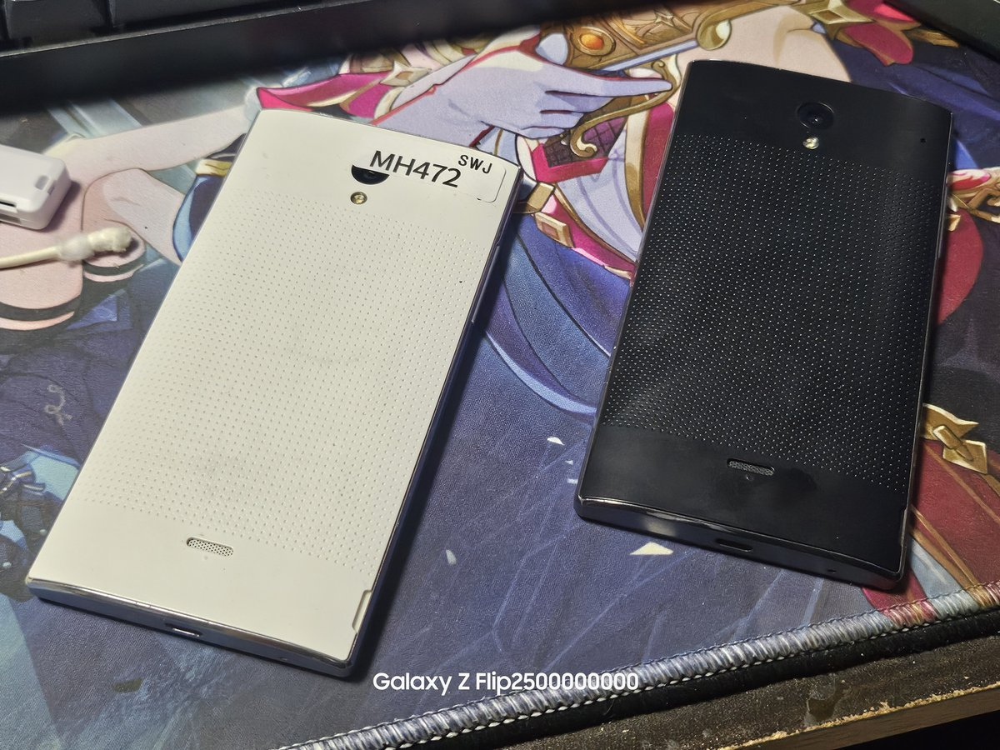